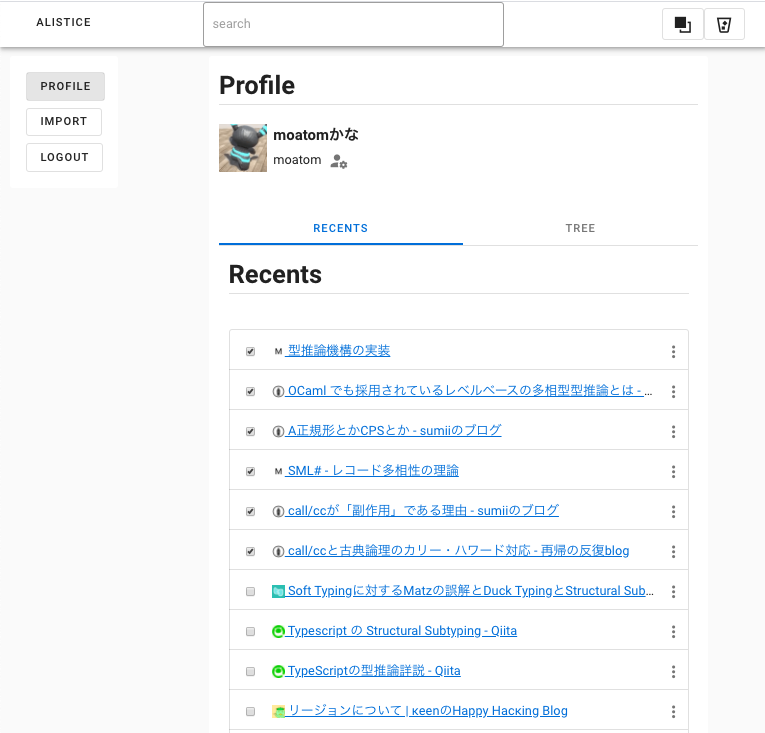
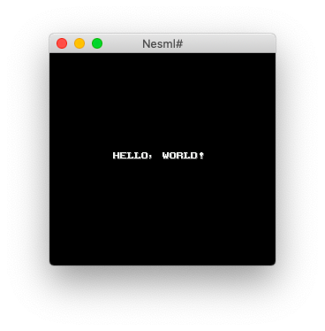

Tomoaki Kobayashi |
20th Nov 2024
Here, I will showcase the software projects I have worked on during my leisure time.
https://github.com/moatom/strymonas.github.io
It is made of Pandoc. See https://github.com/moatom/profile.

https://github.com/moatom/alistice
